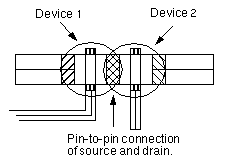
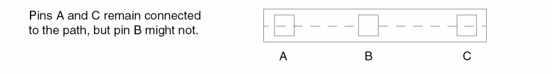
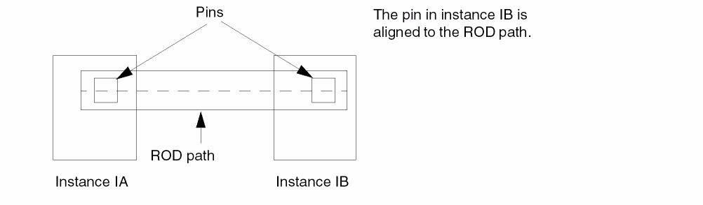
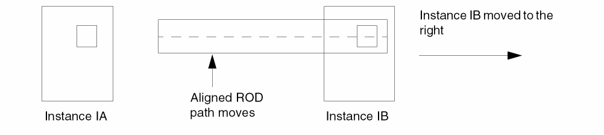

Pin-Path and Pin-PathSeg Connections Preserved
You can configure the layout editor to automatically reconnect path-to-pin and pathSeg-to-pin connections that are broken during any pin editing activity. You can maintain connections by doing one of the following:
- In Layout Editor Options form, select the Maintain Connections check box.
-
Press
F6to toggle Maintain Connections on and off.
A message in the CIW lets you know the status of Maintain Connections.
Maintain Connections is a background process that monitors the connectivity of pins that abut or overlap path or pathSeg ends on the same layer. When any editing activity causes the pin to move away from the path or pathSeg end, Maintain Connections automatically modifies the path or pathSeg so that it remains connected to the pin.
Maintain Connections searches all instances in the top cellview to find all the pins, then finds all the overlapping paths and pathSegs associated with each pin to check for broken connections. If the top-level design contains many instances and each instance contains many pins, opening a design can become more time consuming. When you open large designs, you should set Maintain Connections to off.
The editing activities that can cause a pin to change location include:
- Moving or stretching a pin
- Moving or stretching an instance containing a pin
- Editing pin properties by changing the pin shape or pin location
- Changing Pcell parameters
The Maintain Connections option operates on pins, paths, and pathSegs with the following characteristics:
- The pin and path or pathSeg are on the same or equivalent layer and have the same layer purpose.
- The path or pathSeg end overlaps or abuts the pin.
- The pin is rectangular.
- If the pin is an instance, it must be placed at the same level as the path or pathSeg.
- If the pin and path or pathSeg are ROD objects, they cannot be aligned.
One way to see the effects of Maintain Connections is to change the parameters of an instance that contains pin-path or pin-pathSeg connections on the same layer. After you change the parameters, the instance changes shape to the new value, and the path or pathSeg and pin retain their connectivity.
To change the parameters of an instance that contains pin-path or pin-pathSeg connections, on the layout canvas, select a Pcell containing pin-path or pin-pathseg connections. Then, open the properties form by choosing Edit – Basic – Properties. On the Parameter tab, change the size of the Pcell and click Apply. The following image shows a Pcell selected.
The instance changes shape to the new width value, and the paths/pathsegs reconnect to the pins.
Maintain Connections does not retain connectivity in the following relationships:
-
Pin-to-pin connections
 -
Pins placed in the middle of paths
 -
Aligned ROD objects
ROD alignments take precedence over maintaining connections.
The following image shows a ROD path before a move operation with Maintain Connections:
The following image shows a ROD path after a move operation with Maintain Connections:

Moving instance IB causes the whole ROD path to move. The aligned path does not stretch, so moving instance IB breaks the electrical connection between the two pins.
Related Topics
Return to top